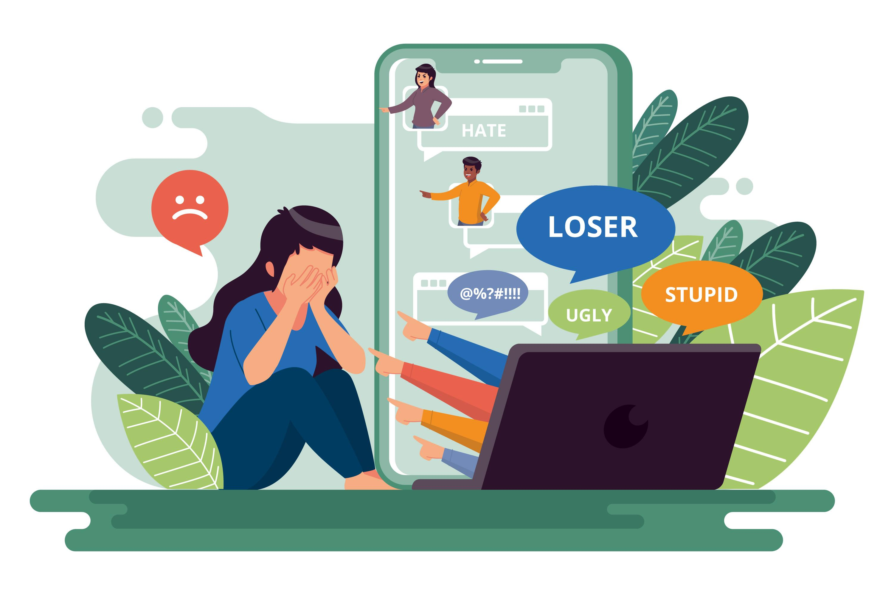

اختبار قصير
إلى مشاركة المعلومات بشكل آمن
إلى استخدام الإنترنت لأغراض تعليمية
التنمر الإلكتروني
التنمر اللفظي
بمشاركة المزيد من المعلومات الشخصية عبر وسائل التواصل الاجتماعي
بالإبلاغ عن أي حالة تنمر إلكتروني وعدم مشاركة المعلومات الشخصية بشكل عام
مفهوم التنمر الإلكتروني:
يُعرَّف التنمر الإلكتروني بجميع الأفعال التي تستهدف زعزعة الضحية نفسيًا أو اجتماعيًا، سواءً كان ذلك من خلال مراسلات، نشر معلومات مزيفة، أو حتى صور ملفّقة بهدف التسبب في الإحراج والإهانة. يتميز التنمر الإلكتروني بأنه يختفي في أبعاد العالم الرقمي، حيث لا يترك آثارًا مادية، لكنه يترك آثارًا نفسية عميقة تستمر لفترة طويلة.
أنواع التنمر الإلكتروني:
الهجاء الإلكتروني:
يتضمن التنابز بالألقاب والتجاوزات اللفظية في منشورات وتعليقات منصات التواصل الاجتماعي، ويشمل أيضًا العنصرية والكراهية والتحرش.
تنمر صناع المحتوى:
يحدث عندما يستخدم شخص ذو صيت إلكتروني أو مؤثر شهير نفوذه للتنمر على الآخرين.
التنمر الجماعي (النبذ الإلكتروني):
يحدث بعد حملات إلكترونية تهدف إلى نبذ المستهدف اجتماعيًا في العالم الرقمي.

التجسس:
يشمل تتبع الآخرين عبر برامج تجسس رقمية للكشف عن معلوماتهم وابتزازهم.
الملاحقة الإلكترونية:
تشمل الرسائل التهديدية التي يتلقاها المستهدف باستمرار بهدف تهديده ومضايقته.
أمثلة على التنمر الإلكتروني:
يصعب تحديد واكتشاف التنمر الإلكتروني غالبًا، وذلك بسبب خفائه وتستره خلف قناع المزاح والسخرية الطريفة. ومع ذلك، يجب علينا أن نكون أكثر وعيًا ويقظة لنتمكن من التعرف على هذا النوع من التنمر في مراحله الأولى. إليك بعض الأمثلة الشائعة للتنمر الإلكتروني:
ترك تعليقات مؤذية أو ساخرة على الإنترنت: نشر تعليقات مؤذية أو ساخرة على الإنترنت، ونشر الشائعات عبر مختلف المنصات لإحراج الشخص المستهدف وتحقيره والتقليل من شأنه.
التهديد والترهيب: التهديد بإلحاق الأذى بالشخص أو كتابة كلمات غير مسؤولة ومؤذية مثل "اذهب وانتحر" أو "ارم نفسك من حافة الجرف".
مشاركة مقاطع فيديو أو صور مؤذية: إنشاء ومشاركة مقاطع فيديو أو صور أو ردود فعل تؤذي الشخص المستهدف وتربطه بالنكتة إلى الأبد.
سرقة الهوية: تزييف الهوية الحقيقية لصاحب حساب وسائل التواصل الاجتماعي للتجسس واستقصاء معلومات الشخص المستهدف أو تشويه سمعته بنشر معلومات كاذبة عنه.
نشر تعليقات كارهة ونكات عنصرية: نشر تعليقات كارهة ونكات عنصرية تمس الصفات الشخصية، مستهدفًا رموزًا تمثل جنسيات مختلفة أو أديانًا أو بلدانًا أو أعراقًا.
إنشاء صفحات ضارة: إنشاء صفحات معينة كمدونات واستخدامها لإلحاق الضرر بشخص ما، وتتبع أخطائهم وتسليط الضوء على عيوبهم الظاهرة والخفية، سواء كانت حقيقية أو مزيفة.
إسقاط الوثائق (Doxing): إسقاط الوثائق ينطوي على الكشف عن المعلومات الشخصية مثل بطاقات الهوية وعناوين المنازل وأرقام الهواتف والضمان الاجتماعي أو روابط الحسابات الشخصية على وسائل التواصل الاجتماعي بهدف الانتقام والإيذاء، مما ينتهك خصوصية الشخص المستهدف ويعرضه للجمهور.
بؤر التنمر الإلكتروني:
نظرًا لأن محور مقالتنا يدور حول الخطر النفسي الذي يهدد بشكل رئيسي المراهقين والأطفال، فإن لهذا الخطر أماكن رقمية محددة لا يفوتها المتنمرون، وهي:
وسائل التواصل الاجتماعي الرقمية: تشكل وسائل التواصل الاجتماعي الرقمية مساحة رائعة وخلاقة للأجيال الناشئة، حيث يعبر الأطفال والمراهقون خاصةً من خلالها عن مشاعرهم ويعرضون إبداعهم في صنع مختلف أنواع المحتوى الذي يعبرون من خلاله عن أنفسهم ويرتبطون به مع أقرانهم دون أي تكلفة ذكرى ولا أي صعوبة في البحث عن الأشخاص وتكوين العلاقات الجديدة. ومع ذلك، فإن هذه الانفتاحية تجعل هذه المنصات بؤرة مثالية للمترصدين والمتنمرين.
ألعاب الفيديو: نادرًا ما يخلو منزل من عشاق ألعاب الفيديو، سواء كانوا صغارًا أو كبارًا، وكما هو الحال فإن الغالبية العظمى من عشاق هذه الألعاب هم من المراهقين والأطفال، حيث أن 70% من اللاعبين حول العالم هم أشخاص لا تزيد أعمارهم عن الثامنة عشرة. تُتيح بعض هذه الألعاب اللعب الفردي بينما يُتيح البعض الآخر اللعب متعدد اللاعبين. ومن الملفت للنظر أن الألعاب التي لا يمكن إلا أن تكون متعددة اللاعبين تسمح لمستخدميها باللعب مع أشخاص آخرين سواء كانوا على معرفة واقعية أو رقمية عبر الإنترنت. وتُلعب هذه الألعاب على أجهزة الكمبيوتر أو على أجهزة ألعاب مختلفة مثل: نينتندو جيم بوي، بلاي ستيشن بورتابل وغيرها، أو حتى على الهواتف المحمولة والأجهزة اللوحية. ونظرًا لأن اللاعب يمكنه إخفاء هويته في هذه الألعاب من خلال استخدام أسماء وشخصيات مستعارة، فإن هذا يزيد من فرص التنمر الإلكتروني وحدته، والذي لا يمكن بأي حال من الأحوال تقييده أو السيطرة عليه.
هذه البيئات الرقمية وألعاب الفيديو تشكل تحديات كبيرة للآباء والأمهات. فقد يكون من الصعب عليهم مراقبة أنشطة أطفالهم على هذه المنصات وفهم المخاطر التي قد يواجهونها. لذا يجب على الآباء والمربين البقاء على علم دائم بأنشطة أطفالهم على الإنترنت والمشاركة في محادثات مفتوحة حول التنمر الإلكتروني وكيفية التعامل معه.
ما هي دوافع المتنمر؟
ربما يشغل هذا السؤال الكثيرين، حيث يسعون لفهم الأسباب التي تجعل الأشخاص يلجأون إلى ارتكاب الأذى ومضايقة الآخرين. قد اتفق الباحثون والخبراء على أن المتنمر، سواءً كان على الإنترنت أو في الحياة الواقعية، ليس شخصًا عاديًا. إليكم بعض الدوافع التي قد تكون وراء تصرفاتهم:
نقص التعاطف الإنساني
هناك نظرية تشير إلى أن مرتكبي التنمر الإلكتروني يفتقرون إلى أبسط مبادئ التعاطف مع الآخرين. انعدام التواصل المباشر وعدم تجربة تأثير أفعالهم على الضحية يزيد من قسوة هذا التنمر ويشجعه.
شعور بالسيطرة والقوة
في راحة بيوتهم وبدون مخاوف من العواقب، يجد المتنمرون الإلكترونيين الفرصة لنفث سمومهم على ضحاياهم، مما يجعلهم يشعرون بالعظمة والانتصار. يتزايد هذا الشعور إذا كان هناك أشخاص يشجعونهم ويؤيدونهم.
حياة فارغة ومملة
عندما تكون الحياة خالية من المغزى وتفتقر إلى الهدف، يجعل المتنمرون الإلكترونيين من إيذائهم الإلكتروني هدفًا لهم. تلك اللحظات تجلب لهم البهجة والمتعة، وتمنحهم إحساسًا بالانتماء والقيمة بين المجموعة التي ينتمون إليها.
غياب الرقابة الأسرية
عدم الاهتمام الكافي والإشراف من الوالدين يجعل المتنمرين ينجذبون نحو هذا السلوك لجذب الانتباه، حتى إذا كانوا ضحية للتنمر في الواقع.
آثار التنمر الإلكتروني وعواقبه على الضحية
العزلة الدائمة عن المجتمع والأصدقاء والأحباء. تقلبات مزاجية حادة وضياع التركيز. صعوبة في التعلم وتدهور الأداء الدراسي. مشاكل صحية مثل الصداع والمشاكل بالمعدة. فقدان الاهتمام بالأنشطة السابقة والاكتفاء بالانعزال. انخفاض في الثقة بالنفس والثقة بالآخرين. التخلف الاجتماعي والتصرفات اللامبالية. تغييرات في الوزن وظهور أفكار سوداوية.
كيفية التصدي للتنمر الإلكتروني
توعية الأطفال بسلوكيات الإنترنت المقبولة وأخطار التنمر الإلكتروني. مراقبة استخدامهم للأجهزة وتحديد ساعات الاستخدام المناسبة. تعزيز الأخلاقيات والسلوكيات الإيجابية. تشجيع الحوار المفتوح والشفاف مع الأطفال حول تجاربهم ومشاكلهم. عدم المشاركة في التنمر الإلكتروني، والإبلاغ عن أي حادثة.
مواقع مفيدة و مهمة
الوقاية من الابتزاز الرقمى
التنمر الإلكتروني: ما هو وكيف يمكن إيقافه
التنمّر عبر الإنترنت: ما هو وكيف نوقفه